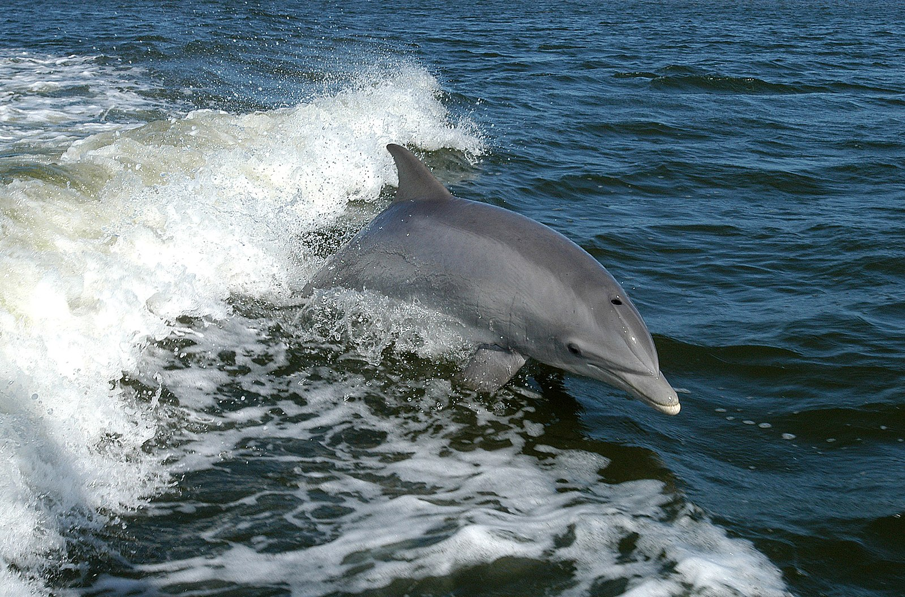

Le substantif masculin « dauphin » (/do.ˈfɛ̃/) est issu, par l'intermédiaire d'un latin vulgaire *dalphinus, du latin classique delphinus, lui-même issu du grec δελφίς / delphís1,2,3, peut-être lui-même issu de δελφὐς / delphús, « utérus4 » ou apparenté à delphax, le porc, qui partage une couche de graisse analogue4,N 1. L'ancien français daufin est attesté au milieu2 du xiie siècle1 : d'après le Trésor de la langue française informatisé, sa plus ancienne occurrence connue se trouve dans un manuscrit du Roman d'Alexandre2. « Dauphin » désigne en français de nombreux cétacés à dents (odontocètes) de moins de cinq mètres généralement dotés d'un rostre long même si l'espèce la plus familière de dauphins, celle que l'on trouve en majorité dans les delphinariums, est le grand dauphin, dont le nom signifie en latin « à nez tronqué ». Les espèces concernées sont : plusieurs espèces de la famille des Delphinidés qui inclut aussi les orques ; les Delphinoïdes et les dauphins d'eau douce vivant dans les fleuves d'Asie ou d'Amérique du Sud. Sous le terme dauphin, on regroupe beaucoup d'espèces très différentes. Aussi bien au niveau comportemental qu'au niveau physique aussi les généralités propres à tous les dauphins sont communes à tous les odontocètes, appelés « dauphins » ou non. Certains cétacés sont parfois appelés incorrectement « dauphins » par exemple ceux avec un rostre court ou à peine existant tels que le narval et le béluga, deux animaux plus grands que les dauphins classiques, mais surtout les marsouins qui sont, eux, beaucoup plus petits.
| varietes 1 | tailles | poids |
|---|---|---|
| dauphin rouge | 1m88 | 2m55 |
| dauphin vert fluo | 120kg | 190kg |